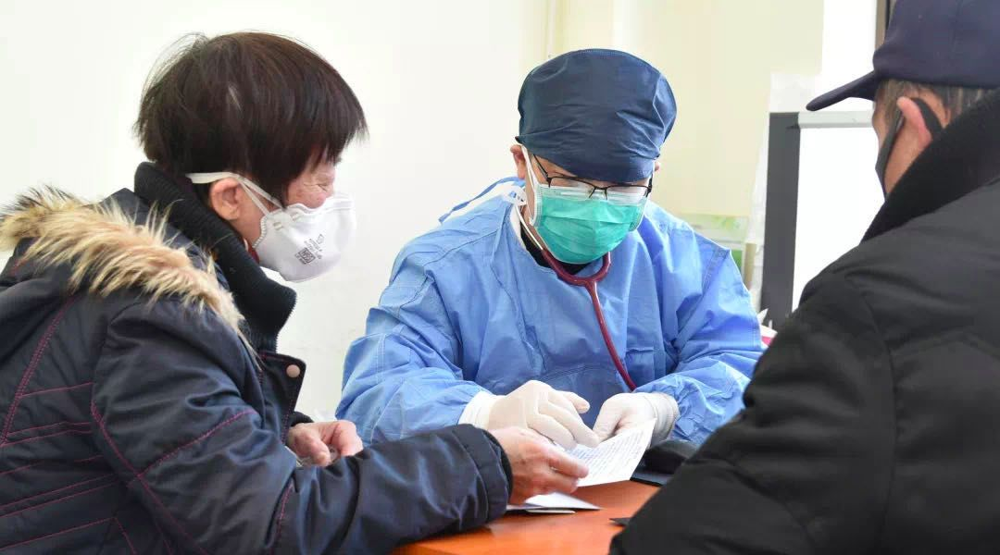
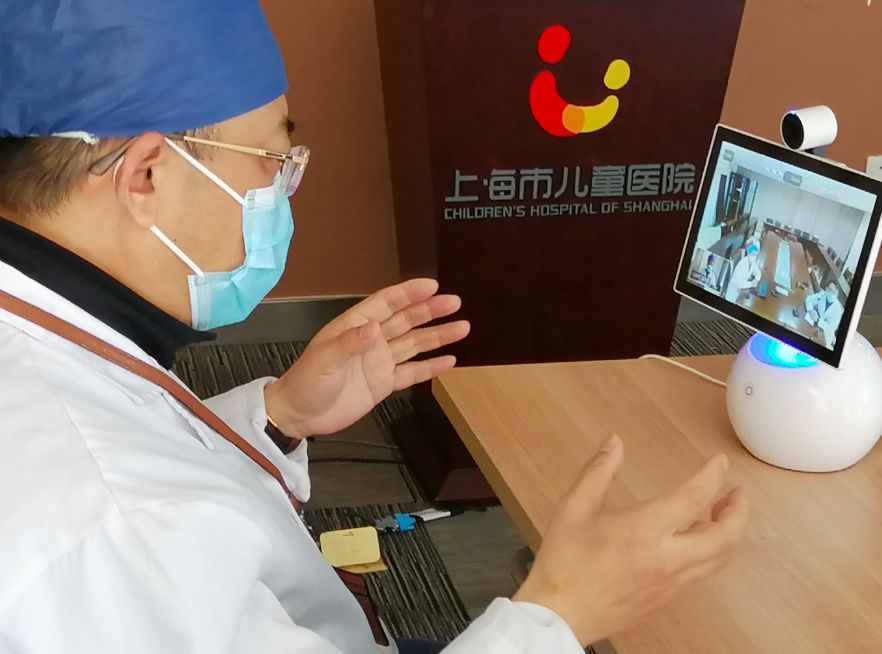

疫情下的天津“微医模式”
原文链接 备份链接 从线下到线上，从疫情时期到常规医疗，天津“微医模式”或将成为各地参考借鉴的范例。 全文5588字，阅读约需11分钟 从大年初一开始，天津医院感染免疫科副主任刘秀婵有了两个新身份。 穿上防护服戴上口罩，她是支援天津医院 …
医院呼吁，并不危急的其他疾病患者，可以通过线上咨询、问诊，暂缓前往医院；但该看的病还是要去医院看，千万不要耽误治疗。
记者 | 周 洁
新冠肺炎疫情期间，其他疾病的病人怎么看病？记者连线上海各大医院发现，恢复门诊近一个月来，在守护疫情防线的同时，各大医院始终努力满足病患的医疗需求。同时医院呼吁，并不危急的其他疾病患者，可以通过线上咨询、问诊，暂缓前往医院，但该看的病还是要去医院看，千万不要耽误治疗。

血透、肿瘤患者治疗手册
对于血透患者，仁济医院大内科主任倪兆慧介绍，要求在血透期间全程佩戴口罩。无论是患者还是陪护的家属，每次血透前，还要接受流行病学调查。

对于同样有生命危险的肿瘤患者，上海市胸科医院的陆舜教授表示， “我们医院的急诊病人没有中断过，对一些重点疫区的病人，来院前需要有一定时间的隔离；对于重症急诊患者，我们的护理也都没有停过，上海主要医院都能继续从事这样的治疗。”
对于肺癌病人，如果是早期患者（磨玻璃结节大概只有8毫米左右），可以推迟手术时间；如果是早期但有淋巴结转移的病人，按期手术；如果能够通过口服药解决的晚期患者，通过长处方减少去医院的次数；只有那些需要化疗的晚期病人，才需要按时进行治疗。而且，现在患者都要通过预约，临时加号不允许哦！
对于那些对病情有疑问有担心又不方便来医院就诊的癌症患者，陆舜教授联合全国百位肿瘤领域专家和医生，利用业余时间为患者做直播答疑，开通了免费义诊渠道——“肺凡力量”公益线上义诊。
如果患者要进行网上问诊，最好做好一些准备——提供完善的病历资料；并提供影像资料。
上海市肺科医院张哲民副院长介绍，新冠病毒肺炎的影像学早期表现是磨玻璃影为主。因此，肺科医院门诊加强了对磨玻璃影及肺内斑块影病例的鉴别诊断，避免漏诊。其次，肺功能通气检查过程、气管镜、经皮肺穿刺检查等容易发生交叉感染，医院医务科、院感科以及胸外科联合审核病例，排除新冠病毒感染风险才允许接受此类检查。另外，疫情期间严格控制手术指征，推迟择期手术；必须做的手术严格开展手术消毒隔离措施。
普通门急诊规范推进
新冠疫情发生以来，上海各大医院日均门诊量均有所下降。而红外线体温自动检测设备、全预约制就诊、扫码填表等等，却成了患者看病的新风尚。
上海交通大学医学院附属仁济医院副院长王育表示，无论是春节期间，还是现在陆续复工阶段，除了极个别科室和诊疗项目因疫情防控需求不得不关闭外，仁济医院的普通门诊、专病门诊、专家门诊以及特需门诊，都是正常开诊。

仁济医院大外科主任曹晖表示，对于择期手术患者，医院严格按照收治入院的流程，排查重点区域人员和疑似病例，做到防控的及时有效。“目前择期手术患者面临最大的问题是血源短缺，要确保手术的安全，需要外科医生将手术做得更精细，而血源问题需要依靠整个社会的支援。”
而对于普通的门诊患者，市一医院于1月29日率先成为全市第一批正式开通其他疾病在线咨询平台的医院，开通了包括眼科、泌尿外科、耳鼻咽喉头颈外科、肿瘤中心、神经内科、脊柱外科、医学心理科等在内的多学科免费线上咨询服务，在疫情期间，为患者“零”距离解答排疑。据悉，这种做法在沪上各大医院均有推行。
线上会诊守护孕产妇和儿童
疫情期间，孕产妇和儿童的医疗需求“等不起”。复旦大学附属妇产科医院、中福会国际和平妇幼保健院等包括产科在内的普通门诊及部分专科门诊均正常开放。针对可能出现的发热孕产妇急诊分娩情况，国妇婴备好了“隔离产房”“隔离手术室”“隔离婴儿室”。
市一医院门急诊办公室负责人告诉记者，准妈妈们可在家中预约“观察期产科门诊”。“产检与普通检查相比存在特殊性，一些关键的时间点例如NT检查或是大排畸检查受孕周限制，需要定期前往医院。”
在上海市儿童医院，院方一方面强化预检分诊与发热门诊管理，建立严密的疫情监测体系，着力做到“零漏诊”；另一方面，医院开展门诊分时段全预约，优化服务流程，充分利用互联网医疗平台率先开展发热相关疾病在线咨询和长三角区域远程联合门诊。

院方介绍，为了在疫情防控期间及时协助家长解决儿童常见病、慢性病的处理，上海市儿童医院于1月29日就开通线上发热咨询，截至2月24日上午8时已累计接受8055名家长咨询，访问量7.1万人次。在此基础上，为解决一些外地患儿来沪不便的问题，儿童医院与湖北、内蒙古、云南，还有长三角等地的合作共建单位开展“远程联合门诊”。
上海市儿童医院于广军院长介绍，疫情当前，远程联合门诊能够引导患者就近就医，解决外地专科患儿就医复诊困难的问题。

征集令
《新民周刊》现面向全国征集新冠肺炎采访对象和真实故事：
如果你是参与抗击新冠肺炎疫情的医护人员或其家属，我们希望聆听你的“战疫”故事，也希望传达你的诉求。
如果你是确诊、疑似患者本人或家属，我们希望了解你和家人如何“抗疫”的过程，让外界了解你的真实经历。
如果你是疫情严重地区的普通市民，我们希望展现你的乐观，并倾听你所需的帮助。
如果你是公共服务人员或各类捐助者，我们希望看到你的“最美逆行”，记录下你的无私。
……
抗击新冠肺炎疫情，我们诚征对疫情了解的社会各界人士，提供相关线索，说出你的故事，让我们用新闻留存这一切。
《新民周刊》新冠肺炎线索征集值班编辑联系方式（添加时请简要自我介绍）：
周一：应 琛 微信号：paulineying0127
周二：金 姬 微信号：gepetta
周三：黄 祺 微信号：shewen-2020
周四：周 洁 微信号：asyouasyou
周五：孔冰欣 微信号：kbx875055141
周六：吴 雪 微信号：shyshine1105
周日：姜浩峰 微信号：jianggeladandong
✳如你需要捐赠物资，可与以下两位工作人员联系:王勇：WangYong-SH 吴轶君：rommy150708（添加时请注明“捐物资”，方便工作人员快速通过您的申请，谢谢。）
新闻是历史的底稿，你们是历史的见证者。期待你的故事、你的线索！

▼
大家还都在看这些
▼
新民周刊所有平台稿件， 未经正式授权
一律不得转载、出版、改编或进行
与新民周刊版权相关的其他行为，违者必究


原文链接 备份链接 从线下到线上，从疫情时期到常规医疗，天津“微医模式”或将成为各地参考借鉴的范例。 全文5588字，阅读约需11分钟 从大年初一开始，天津医院感染免疫科副主任刘秀婵有了两个新身份。 穿上防护服戴上口罩，她是支援天津医院 …
原文链接 备份链接 有时候半夜突然想到某个可能的漏洞，惊出一身冷汗。 记者 | 黄 祺 抗击新冠肺炎疫情的紧要关头，医院不能失守。 中国疾控中心2月17日的一份研究报告显示，全国已有3019名医务人员感染了新型冠状病毒，其中包括1716 …
原文链接 备份链接 【财新网】（记者 赵宁 实习记者 曾美雅）北京大学人民医院一名住院病人感染新冠肺炎的消息传出后，北京疫情防控备受关注。国家主席习近平在2月23日的讲话中，更是将“全力做好北京疫情防控工作”作为了七项重点工作之一。由于医 …
原文链接 备份链接 【财新网】（记者 马丹萌 实习记者 何京蔚）49岁的武汉人李平（化名）已经昏迷了一个月，先后辗转三家医院，却迟迟没有得到脑外科医生的有效救治。 62岁的赵康（化名）年前因为肾结石在武汉市第一医院做了输尿管内的支架引流管 …
原文链接 备份链接 【财新网】（记者 马丹萌 实习记者 何京蔚）49岁的武汉人李平（化名）已经昏迷了一个月，先后辗转三家医院，却迟迟没有得到脑外科医生的有效救治。 62岁的赵康（化名）年前因为肾结石在武汉市第一医院做了输尿管内的支架引流管 …